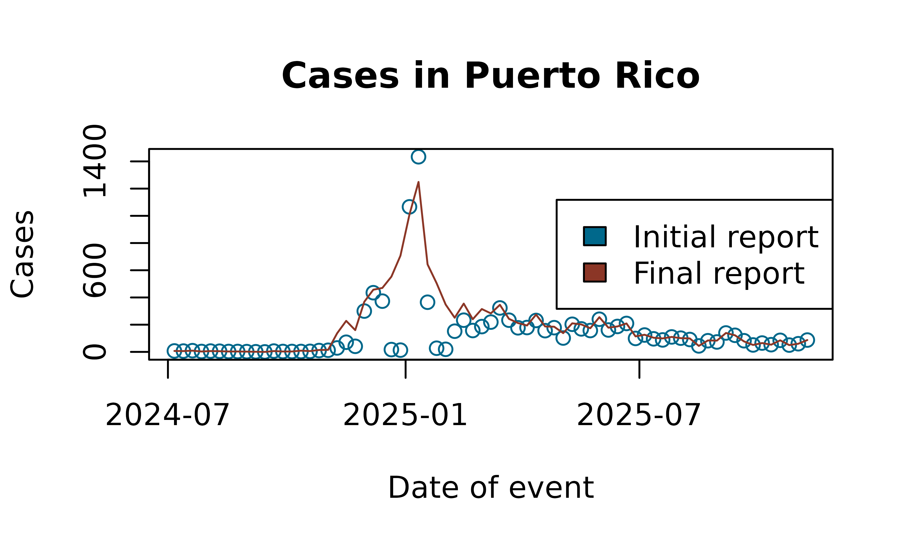

Example analysis with Flusight
Example.RmdIn this vignette we demonstrate how to use the tbl.now
framework with real data from the U.S. Centers for Disease Control and
Prevention (CDC). Specifically, we work with the Flusight dataset, which
contains weekly counts of hospital admissions for laboratory-confirmed
influenza.
We begin by loading the required packages:
library(dplyr)
#>
#> Attaching package: 'dplyr'
#> The following objects are masked from 'package:stats':
#>
#> filter, lag
#> The following objects are masked from 'package:base':
#>
#> intersect, setdiff, setequal, union
library(lubridate)
#>
#> Attaching package: 'lubridate'
#> The following objects are masked from 'package:base':
#>
#> date, intersect, setdiff, union
library(tbl.now)Data
The Flusight dataset (?flusight) includes weekly
influenza hospital admission counts. For each epidemiological week
(target_end_date), the CDC publishes revised counts across
multiple future weeks (as_of). Thus, each event week is
associated with multiple reporting dates reflecting updates or
revisions.
data(flusight)| as_of | target_end_date | location_name | observation |
|---|---|---|---|
| 2023-09-23 | 2022-02-12 | Alabama | 10 |
| 2023-09-23 | 2022-02-19 | Alabama | 22 |
| 2023-09-23 | 2022-02-26 | Alabama | 13 |
| 2023-09-23 | 2022-03-05 | Alabama | 31 |
| 2023-09-23 | 2022-03-12 | Alabama | 36 |
| 2023-09-23 | 2022-03-19 | Alabama | 27 |
| 2023-09-23 | 2022-03-26 | Alabama | 27 |
| 2023-09-23 | 2022-04-02 | Alabama | 32 |
| 2023-09-23 | 2022-04-09 | Alabama | 28 |
| 2023-09-23 | 2022-04-16 | Alabama | 19 |
The columns are:
target_end_date: the epidemiological week when cases occurredas_of: the week in which the CDC updated its estimate for that event weeklocation_name: the state or territoryobservation: the reported number of cases for target_end_date as of as_of
The key feature of this dataset is that observation is cumulative:
the value for a given target_end_date and
as_of is the latest estimate of total cases up to that
event week, not the incremental update for that reporting date. The
following example illustrates the structure:
flusight %>%
filter(location_name == "Puerto Rico" & target_end_date == ymd("2025/04/12"))
#> # A tibble: 19 × 4
#> as_of target_end_date location_name observation
#> <date> <date> <chr> <dbl>
#> 1 2025-04-12 2025-04-12 Puerto Rico 231
#> 2 2025-04-19 2025-04-12 Puerto Rico 231
#> 3 2025-04-26 2025-04-12 Puerto Rico 231
#> 4 2025-05-03 2025-04-12 Puerto Rico 261
#> 5 2025-05-10 2025-04-12 Puerto Rico 261
#> 6 2025-05-17 2025-04-12 Puerto Rico 261
#> 7 2025-05-24 2025-04-12 Puerto Rico 261
#> 8 2025-05-31 2025-04-12 Puerto Rico 261
#> 9 2025-06-07 2025-04-12 Puerto Rico 261
#> 10 2025-06-28 2025-04-12 Puerto Rico 273
#> 11 2025-07-05 2025-04-12 Puerto Rico 273
#> 12 2025-07-23 2025-04-12 Puerto Rico 273
#> 13 2025-09-03 2025-04-12 Puerto Rico 273
#> 14 2025-09-03 2025-04-12 Puerto Rico 273
#> 15 2025-09-03 2025-04-12 Puerto Rico 273
#> 16 2025-09-03 2025-04-12 Puerto Rico 273
#> 17 2025-09-24 2025-04-12 Puerto Rico 273
#> 18 2025-09-24 2025-04-12 Puerto Rico 273
#> 19 2025-11-12 2025-04-12 Puerto Rico 274Each unique pair of (target_end_date,
as_of) therefore corresponds to a cumulative estimate.
Creating the tbl_now
Creating the tbl_now Object
To construct a tbl_now object, we must indicate:
event_date: the date on which cases occurredreport_date: the date on which the estimate was releasedcase_count: the column containing case countsstrata: grouping variables that define separate strata (e.g., states)
A first attempt produces several warnings:
df_wrong <- flusight %>%
tbl_now(event_date = target_end_date,
report_date = as_of,
case_count = observation,
strata = location_name)
#> Warning: Cannot accurately infer the data-type when rows are repeated across event and
#> report dates
#> Warning: Some observations in the count column "observation"
#> contain missing values.
#> ℹ Identified data as <count-incidence> with counts in column "observation".
#> Warning: *Non-unique*: Data has multiple rows for the same event (target_end_date) and
#> report(as_of) dates. Consider using `to_count()` to aggregate the data
#> or`distinct()` to remove repeated observations.These warnings arise because:
Duplicate rows exist for some event–report combinations.
Missing values appear in the case count column.
The data is incorrectly inferred to represent count-incidence rather than count-cumulative, because cumulative-type datasets often contain repeated records.
Inspecting a subset confirms duplicated rows:
flusight[c(422146, 422147, 422148, 422149), ]
#> # A tibble: 4 × 4
#> as_of target_end_date location_name observation
#> <date> <date> <chr> <dbl>
#> 1 2025-09-03 2022-02-05 Alabama 5
#> 2 2025-09-03 2022-02-05 Alabama 5
#> 3 2025-09-03 2022-02-05 Alabama 5
#> 4 2025-09-03 2022-02-05 Alabama 5Using `dplyr’s distinct() we remove the duplicates:
Next, we remove observations with missing case counts:
However, reconstructing the object still yields a misclassified data type:
df_still_wrong <- tbl_now(flusight, event_date = "target_end_date", report_date = "as_of",
case_count = "observation", strata = c("location_name"))
#> ℹ Identified data as <count-incidence> with counts in column "observation".The function incorrectly infers incidence data (i.e., each row represents the incremental number reported on that report date). In contrast, the Flusight dataset contains cumulative values. We therefore explicitly declare the data type:
df_flu <- tbl_now(flusight, event_date = "target_end_date", report_date = "as_of",
case_count = "observation", strata = c("location_name"), data_type = "count-cumulative")This yields a correctly structured tbl_now object:
df_flu
#> # A tibble: 451,415 × 7
#> # Data type: "count-cumulative"
#> # Frequency: Event: `weeks` | Report: `weeks`
#> as_of target_end_date location_name observation .event_num .report_num
#> <date> <date> <chr> <dbl> <dbl> <dbl>
#> [report_dat… [event_date] [strata] [cases] [...] [...]
#> 1 2023-09-23 2022-02-12 Alabama 10 1 85
#> 2 2023-09-23 2022-02-12 Alaska 0 1 85
#> 3 2023-09-23 2022-02-12 Arizona 64 1 85
#> 4 2023-09-23 2022-02-12 Arkansas 29 1 85
#> 5 2023-09-23 2022-02-12 California 36 1 85
#> 6 2023-09-23 2022-02-12 Colorado 29 1 85
#> 7 2023-09-23 2022-02-12 Connecticut 0 1 85
#> 8 2023-09-23 2022-02-12 Delaware 2 1 85
#> 9 2023-09-23 2022-02-12 District of … 0 1 85
#> 10 2023-09-23 2022-02-12 Florida 68 1 85
#> # ────────────────────────────────────────────────────────────────────────────────
#> # Now: 2025-11-12 | Event date: "target_end_date" | Report date: "as_of"
#> # Strata: "location_name"
#> # ────────────────────────────────────────────────────────────────────────────────
#> # ℹ 451,405 more rows
#> # ℹ 1 more variable: .delay <dbl>Working with the tbl_now Object
tbl_now objects are fully compatible with
dplyr verbs. For example, we may focus on Puerto Rico and
observations after mid–2024:
df_pr <- df_flu %>%
rename(latest_report = as_of) %>%
filter(location_name == "Puerto Rico") %>%
filter(target_end_date >= ymd("2024/07/01"))
df_pr
#> # A tibble: 1,291 × 7
#> # Data type: "count-cumulative"
#> # Frequency: Event: `weeks` | Report: `weeks`
#> latest_report target_end_date location_name observation .event_num
#> <date> <date> <chr> <dbl> <dbl>
#> [report_date] [event_date] [strata] [cases] [...]
#> 1 2024-11-16 2024-07-06 Puerto Rico 7 126
#> 2 2024-11-16 2024-07-13 Puerto Rico 6 127
#> 3 2024-11-16 2024-07-20 Puerto Rico 9 128
#> 4 2024-11-16 2024-07-27 Puerto Rico 3 129
#> 5 2024-11-16 2024-08-03 Puerto Rico 6 130
#> 6 2024-11-16 2024-08-10 Puerto Rico 5 131
#> 7 2024-11-16 2024-08-17 Puerto Rico 3 132
#> 8 2024-11-16 2024-08-24 Puerto Rico 3 133
#> 9 2024-11-16 2024-08-31 Puerto Rico 2 134
#> 10 2024-11-16 2024-09-07 Puerto Rico 1 135
#> # ────────────────────────────────────────────────────────────────────────────────
#> # Now: 2025-11-12 | Event date: "target_end_date" | Report date: "latest_report"
#> # Strata: "location_name"
#> # ────────────────────────────────────────────────────────────────────────────────
#> # ℹ 1,281 more rows
#> # ℹ 2 more variables: .report_num <dbl>, .delay <dbl>Because we are now working with a single geographic unit, the
location_name variable is no longer meaningful as a
stratum. We remove it from the strata definition (without removing the
column itself):
df_pr <- df_pr %>%
remove_strata("location_name")
df_pr
#> # A tibble: 1,291 × 7
#> # Data type: "count-cumulative"
#> # Frequency: Event: `weeks` | Report: `weeks`
#> latest_report target_end_date location_name observation .event_num
#> <date> <date> <chr> <dbl> <dbl>
#> [report_date] [event_date] [...] [cases] [...]
#> 1 2024-11-16 2024-07-06 Puerto Rico 7 126
#> 2 2024-11-16 2024-07-13 Puerto Rico 6 127
#> 3 2024-11-16 2024-07-20 Puerto Rico 9 128
#> 4 2024-11-16 2024-07-27 Puerto Rico 3 129
#> 5 2024-11-16 2024-08-03 Puerto Rico 6 130
#> 6 2024-11-16 2024-08-10 Puerto Rico 5 131
#> 7 2024-11-16 2024-08-17 Puerto Rico 3 132
#> 8 2024-11-16 2024-08-24 Puerto Rico 3 133
#> 9 2024-11-16 2024-08-31 Puerto Rico 2 134
#> 10 2024-11-16 2024-09-07 Puerto Rico 1 135
#> # ────────────────────────────────────────────────────────────────────────────────
#> # Now: 2025-11-12 | Event date: "target_end_date" | Report date: "latest_report"
#> # ────────────────────────────────────────────────────────────────────────────────
#> # ℹ 1,281 more rows
#> # ℹ 2 more variables: .report_num <dbl>, .delay <dbl>The now (the effective horizon for the nowcast) is:
get_now(df_pr)
#> [1] "2025-11-12"Changing the “now” for Historical Backtesting
To perform retrospective analyses (backtesting), we can filter the dataset and explicitly set a historical reporting cutoff:
df_pr_new_now <- df_pr %>%
filter(latest_report < ymd("2023/12/01")) %>%
change_now(ymd("2023/12/01"))
df_pr_new_now
#> # A tibble: 0 × 7
#> # Data type: "count-cumulative"
#> # Frequency: Event: `weeks` | Report: `weeks`
#> # ────────────────────────────────────────────────────────────────────────────────
#> # Now: 2025-11-12 | Event date: "target_end_date" | Report date: "latest_report"
#> # ────────────────────────────────────────────────────────────────────────────────
#> # ℹ 7 variables: latest_report <date>, target_end_date <date>,
#> # location_name <chr>, observation <dbl>, .event_num <dbl>,
#> # .report_num <dbl>, .delay <dbl>The new now is:
get_now(df_pr_new_now)
#> [1] "2025-11-12"Working with Initial and Latest Reports
Two helper functions extract initial and final reported values for each event date:
get_initial_reported_cases(): the earliest available report for each eventget_latest_reported_cases(): the most recent report relative to now
A simple plot highlights the differences between initial and final estimates:
initial_reports <- get_initial_reported_cases(df_pr)
latest_reports <- get_latest_reported_cases(df_pr)A simple plot highlights the differences between initial and final estimates:
plot(initial_reports$target_end_date, initial_reports$observation,
type = "p", col = "deepskyblue4",
xlab = "Date of event", ylab = "Cases",
main = "Cases in Puerto Rico")
lines(latest_reports$target_end_date, latest_reports$observation,
col = "tomato4")
legend("right", legend = c("Initial report", "Final report"),
fill = c("deepskyblue4", "tomato4"))